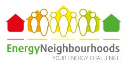

Tools Used
- Building Motivation Over Time
- Feedback
- Financial Incentives and Disincentives
- Norm Appeals
- Obtaining a Commitment
- Overcoming Specific Barriers
- Prompts
- Mass Media
- Neighbourhood Coaches and Block Leaders
Initiated By
- The European Union’s Intelligent Energy Europe Programme
Partners
- Local organizations in each country
Results
- 9% reduction in energy use
Downloadable Documents
- Case Study PDF
Landmark Case Study
Europe’s Energy Neighborhoods
Europe’s Energy Neighbourhoods program engaged neighbourhoods to ‘bet’ with their municipalities that they could reduce energy use by at least 9% over a four-month time period, with no investments in technology allowed. Each neighbourhood was supported by an “Energy Master”, an enthusiastic individual who acted as coordinator for the group and who received specific training to help their group make its energy savings. Those groups that made savings of 9% or more were rewarded with certificates and prizes, and received local media attention for their efforts. Designated a Landmark Case Study in 2019.
Background

Energy Neighbourhoods is based on a campaign run in Belgium in 2003. With funding from the European Union’s Intelligent Energy Europe Programme, the approach was replicated in 2007-2010 (Energy Neighbourhoods) with eleven partners from nine countries. Participants achieved an average energy saving of 10% against their energy consumption the previous year.
The approach was further replicated from 2011 to 2013, in Energy Neighbourhoods2, which engaged 16 partners and 8,626 households (22,420 people) in 16 European Union Member countries: Austria, Belgium, Bulgaria, France, Germany, Great Britain, Greece, Hungary, Ireland, Italy, Latvia, Poland, Romania, Slovenia, Spain and Sweden.
Setting Objectives
Participants “bet” that they would reduce their energy use by at least 9%.
Getting Informed
The program was based on the experiences gained by the project “Klimaatwijken”, set up in Flanders, Belgium during 2003 with support from the Flemish Government.
Delivering the Program
Energy Neighbourhoods (2007-2010)
The European Union’s Energy Neighbourhoods project began in 2007. There were eleven partners from nine European Union member countries. In general, the partner in that country selected the Energy Experts, who then gathered their teams.
The rule was that people had to compete collectively – teams of friends, colleagues and neighbours gathered into Energy Neighbourhoods. (Norm Appeals; Obtaining a Commitment)
The challenge was for participants to save at least 9% energy over four winter months over two years. Aside from losing face, the communities didn’t risk anything if they lost their bets. However, if they won, they were rewarded with certificates and prizes, and received local media attention for their efforts. (Incentives)
To achieve such results the project developed and provided the following.
- Regional campaigns to find interested groups of people and identify potential Energy Masters. Energy Masters were specially trained volunteers from the neighborhood that motivated, supervised monitoring, and provided program materials. (Neighbourhood Coaches and Block Leaders)
- Regular events to give the participants an opportunity to get together and share ideas and experiences (Norm Appeals; Word of Mouth)
- Close cooperation with the participating municipalities
- Regular feedback for the participants and support from the Energy Masters (Feedback)
- Campaign materials to help participants identify their energy wasteful practices (see below; Building Motivation Over Time)
- Energy saving top tips with relevant, targeted advice (Overcoming Specific Barriers; Prompts).
- An online calculation tool to help those taking part to visualise their current energy usage and the effects of their new energy saving behaviours (Vivid, Personalized, Credible, Empowering Communication)
- Climate challenges to provide participants with information on how to lead a wider, more environmentally sensitive lifestyle
- Comprehensive press campaigns (Mass Media)
- Ongoing support from the coordinating organisations.
Online Tool
An online tool was set up to do three things.
- Provide a communication channel that each partner could use with its participants. This was the home for their national campaigns, through which they could present the challenges, news and results, and gather their national savings
- Enable all participants to monitor their energy use in an easy to understand way and to visualize their energy savings. Via this site, households could also track their energy savings.
- Enable Energy Masters and municipalities to track savings and results. Municipalities could manage the households and groups within their jurisdiction. They could also see and download aggregate local savings.
The project partners were all given training sessions and a manual on how to use the online tool, which they then translated into their own languages. This enabled each partner organisation to train and support their Energy Masters and their participants.
Support Materials
A whole host of materials were provided to help participants walk the path of energy saving greatness:
- Energy Neighbourhood handbook – a step by step guide through the competition with detailed instructions on how to use the energy saving calculator on the website.
- Do-it-yourself Home Energy Check – checklist to help identify energy hungry appliances and practices in their home.
- Readings Record Card – An aide memoir for all the meter readings taken during the competition.
- Top Tips – Every 2 weeks a set of top tips were sent out with yet more ideas on how to save energy around the home often focusing on seasonal topics such as ‘a low carbon Christmas’ or ‘energy saving kids’ and on particular rooms in the home i.e.. ‘energy saving in the kitchen.
Those groups that made savings of 9% or more were rewarded with certificates and prizes, receiving local media attention for their efforts.
Energy Neighbourhoods2 (2011-2013)
Energy Neighbourhoods2 (EN2) had 16 partners in 16 countries. During the winters of 2011/12 and 2012/13, the Energy Neighbourhood2 project totaled 830 neighbourhoods, comprised of 8,626 households with 22,420 people, all working towards their energy saving goal.
The winning teams of round 1 had scores that ranged between 15% and 47%, whilst in the second-round energy savings were between 9% and just over 60%!
The following behaviours were promoted.
- Turn off the lights when you leave the room
- Only use the washing machine/dishwasher when full
- Hang up clothes to dry instead of using a tumble dryer
- Turn TV off at the wall
- Unplug all appliances such as phone chargers and turn off all standby
- Boil just the correct amount of water for hot drinks or meals
- Reduce the heating thermostat
For the majority of the participating countries, killing standby was the most popular energy saving behaviour, as was adjusting the heating thermostat downwards. Boiling only as much water as required was also popular, as was ensuring the dishwasher and washing machines were full before turning them on.
During each monitoring period, participants went through four challenge cycles, to expand their understanding of how everyday life can affect the climate. Participants received information and encouragement from experts who helped them to understand what choices made the most difference, and that seemingly small choices still made a difference. These challenges included:
- Low Carbon Christmas – cutting back on the lights, paper and waste. Think about what you are buying.
- How to travel? Do you really need to go by car, maybe swap just one car journey for one on foot or by bike?
- What to eat? Try to ensure the weekly menu is more seasonal, contains more vegetables and less cheese and of course the golden rule – reduce your food waste. + Energy efficient appliances, how to find the right ones? Get to know the energy labels and how to use them!
- Can you make “green” purchases? Of course! Buy, sell or trade your clothes and accessories on internet, use second-hand shops, hold an exchange day.
To ensure participants weren’t overwhelmed by receiving all the challenges at the same time, they were sent out on a monthly basis, with experts giving advice at the starting and interim events. The challenges and tips on how to achieve them were also posted on partner websites, so that even those who were unable to attend the events were able to take part. To help inspire households to take part, prizes were awarded for engagement and innovative solutions.
Winners were chosen first at national level, with the top EU prize (a trip to Brussels for a small gala) going to a town near Athens that reduced its energy consumption by 64%.
Addressing Barriers to Acting
The following chart summarizes the main barriers faced, and how each was addressed.
|
Barrier |
How it was addressed
|
|
Competing priorities, changing established habits |
· Group action and competitions - being part of a team and contributing to the overall performance; group commitment; prize galas on the national and European levels · Realistic chance to win the competition · Because the competitions were each fourth months long and because they were spaced over several years, participants were encouraged to develop new habits |
|
Lack of knowledge and time |
· Support from the Energy Masters, Municipalities and National Coordinators · Direct monitoring (and therefore control) of energy consumption via the online tool |
|
Energy saving is often associated with giving up the things you like |
· Positive and fresh campaign image · The campaigns stressed that reductions in energy consumption could be achieved without a reduction in comfort levels |
|
Energy saving is frequently seen as an investment issue |
· As a behavioural-change-only project, there was no investment involved |
|
Energy savings are noticeable only when the energy bill comes |
· Each household could enter its meter data at any time and immediately see the amount of energy saved |
Financing the Program
The budget for EN2 was 2,124,286 Euros, of which 1,593,215 was provided by the European Union. At a conversion rate of 1.1 that is US$ 2,336,715
Measuring Achievements
- Energy Neighbourhoods ran for four winter months in 2007/2008 and 2008/2009
- Energy Neighbourhoods2 ran for four winter months in 2010/2011 and in 2012/2013.
Participants were asked to enter their own meter data into the online tool. They could see their energy savings immediately.
In addition, each program partner (country) conducted a survey with their participants both before and after the energy saving campaigns. The first survey form used for Energy Neighbourhoods 2 contained 46 questions about information, awareness, understanding, attitude, intention and motivation, as well as both habit and purchase type behaviours. Due to a low response rate in the first campaign of Energy Neighbourhoods 2, the survey length was cut in half, some partners provided incentives, face-to-face interactions were increased, participants were assured of confidentiality and anonymity, and the importance of the survey was explained to the participants. In return for these efforts, 22 of the 32 partner surveys in second campaign had a response rate over 50%.
Each participant was asked for information on how they cooked (whether it is electric or gas, etc,); how they heated their home (oil, gas, electric, wood, …) and how they heated their household water. A computer programme calculated the percentage of how much gas and electricity went into the different types of applications, using historical data and statistics. For each type of application, a correction was made based on the outside temperature. Finally, as each new meter reading was input into the online tool, a calculation was made as to whether the household was using more or less energy than they did the previous year.
Results
Impacts – Individual participants
Energy Neighbourhoods - 2008-2009: Participating neighbourhoods from nine European countries achieved an average household energy saving of 10% against their energy consumption the year before the challenge (baseline year). The program received the European Commissions’ Local Energy Action Award for best local energy initiative in 2010.
ENeighbourhoods2 – 2010-2013: Participating neighbourhoods achieved an average household energy saving of 10%, a reduction of 5,735,000 kWh and savings of nearly 2,425,18 tons of CO2 over the two campaign years. The greatest team savings were reported from teams in Greece (65% reduction in energy use), Latvia (51%) and Bulgaria (48%).
Killing standby was the most popular energy saving behaviour in 7 partner countries during the campaign while boiling just what one needs in the kettle was most popular in Ireland and Italy. Adjusting the thermostat downwards was the most popular energy saving behaviour in the UK, Germany, Spain and Hungary. This latter behaviour was popular in 12 of the partner countries. Using full loads in the washing machine and dishwasher also scored as a popular behaviour amongst participants across Europe.
Impacts – Overall
- Over 13,000 households started the bet and were provided with lots of energy saving information. On average those Neighbourhoods that completed the bet made an energy saving of 9%.
- From 2010 to 2013 alone, 830 Energy Neighbourhoods representing 8,626 households and 22,420 household members took part. On average, they achieved energy savings of 8.94% in the first year and 12.94% in the second year, saving 5,661,872 kWh in total.
- More widely, however, this project helped to stimulate the debate on energy saving within households and also between households and their municipalities, helping to improve their understanding of municipality level local climate action plans and activities.
- A comprehensive communication strategy ensured that participants themselves became multipliers of the project idea when being interviewed and presented in local media channels. In all, as of 2019, 32 patrons underlined the importance of the idea with their commitment; 41 short films had been produced to promote household energy saving and 800 energy masters had been trained to support people in their ambition to live a more efficient lifestyle. In addition, over 700 articles had been published spanning 16 countries; a huge boost in visibility for the municipalities that wanted to support their citizens in saving energy by making a bet.
- The budget for EN2 was 2,124,286 Euros, of which 1,593,215 was provided by the European Union. At a conversion rate of 1.1 that is US$ 2,336,715.
Cost-Effectiveness
- Cost-effectiveness is 1.2 kWh saved annually per US$ spent (2,867,500 / 2,336,715).
Notes
Lessons Learned
- The main reason for success was the innovative combination of the following otherwise standard elements.
- Group action - being part of a team and contributing to the overall performance
- Support from the Energy Masters
- Competition between different groups with prize galas at the national and European levels
- The positive and fresh image of the competition
- Realistic chance to win the competition
- Direct monitoring (and therefore control) of energy consumption via the online tool.
- The saving results are an important factor of the project but changing behaviour in a sustainable way was also an important project goal. It was therefore necessary to provide tailor-made energy saving tips and to accompany and support the participants throughout the competition. After having established certain behavioural patterns throughout the campaign, the participants established energy efficient behaviour routines in their lives over the long term as well.
- “It’s never too late to do as much as possible!” these words were sent to the Swedish participants from their national ambassador Pär Holmgren, at the start of Energy Neighbourhood campaign and it really is true! During the competition this has been proven by all team members regardless of age - their involvement and engagement has been fantastic.
- The social aspect of the project and the commitment of the Energy Masters have been identified as key factors for the success of the project. Saving energy together, motivating each other to keep going and being supported by an energy master who knows the participants well, are elements that really keep the team together and are vital to the neighbourhood’s success and the success of the project overall.
- The term neighbourhood does not necessarily mean that this competition is just for neighbours, natural groups that already exist such as a circle of friends, colleagues at work or an existing group tend to work better than groups that come together just for the project.
- The Energy Neighbourhood project has shown that small changes in behaviour can contribute to significant home energy savings. For this project to work, however, and bridge the gap between knowledge on how to save energy and making actual changes to attitudes and practices, there are other key elements that need to come together:
- the provision of relevant energy advice
- ensuring that the project is fun and motivational – the use of competition and the social aspect of working as part of a team scored highly in this respect
- a working calculation tool and continuous support from the organiser of the project.
- A positive spin-off effect came with the implementation of CO2-challenges, conversations and exchange of experiences between the EN2 participants. Various further ambitions, such as travelling by electric cars to EN2 events, providing a CO2-friendly catering or organising a seasonal cooking class allows fun, demonstration, chat and wider thinking.
Landmark Designation
The program described in this case study was designated in 2019.
Designation as a Landmark (best practice) case study through our peer selection process recognizes programs and social marketing approaches considered to be among the most successful in the world. They are nominated both by our peer-selection panels and by Tools of Change staff and are then scored by the selection panels based on impact, innovation, replicability and adaptability.
The panel that designated this program consisted of:
- Arien Korteland, BC Hydro
- Kathy Kuntz, Kanndo Consulting
- Doug McKenzie-Mohr, McKenzie-Mohr Associates
- Sea Rotmann, Sustainable Energy Advice Ltd.
- Brian Smith, Pacific Gas and Electric Company
- Reuven Sussman, American Council for an Energy-Efficient Economy
- Marsha Walton, New York Energy Research and Development Authority
The case study was written in 2020 by Jay Kassirer.